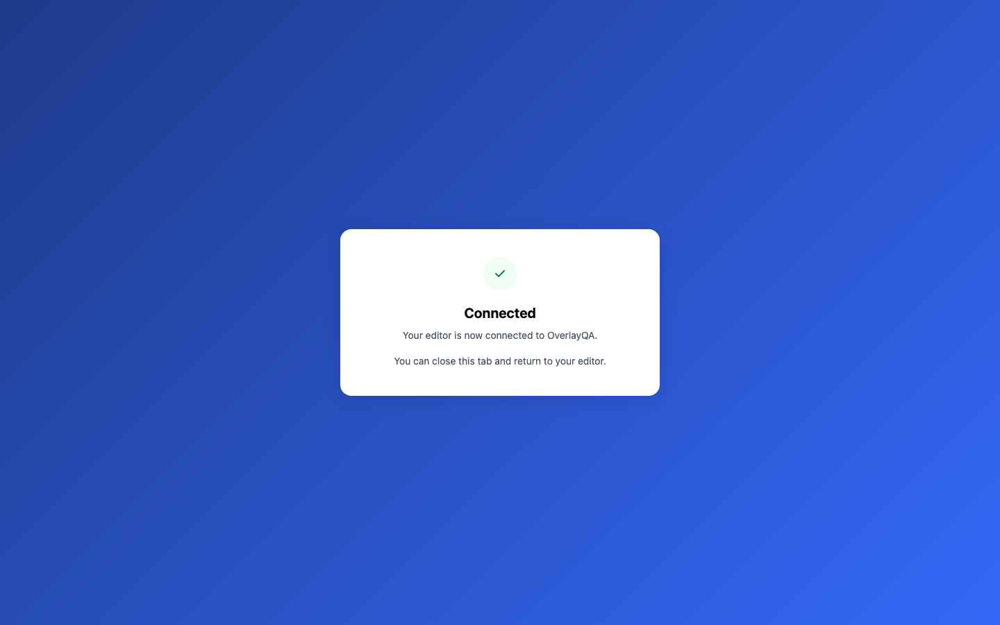

{
"machine": "Emilys-Mac-mini.local",
"api": "http://localhost:3249",
"dashboard": "http://localhost:5249",
"account": "harness-journey+clerk_test@overlayqa.com",
"control": false,
"clientRoot": "/tmp/oq-mcp-stroke-control",
"sourceHash": "fa5f24546562c5ff2d5f47955c69d6f49406bdbd52fc0db257383d8ddea5b5da /tmp/oq-mcp-stroke-control/src/auth.ts\n18109ff48c9ca4461acf954e05b52560b15f8a7d836ff736bc94f0366f2fe00b /tmp/oq-mcp-stroke-control/src/connection-page.ts",
"substitutions": [
"OS browser-launch call delivered to Playwright; actual authorize route and callback",
"Credential home isolated in a temporary directory; actual storeAuth writer",
"Token-exchange origin pointed to the local API"
],
"checks": [
{
"name": "connected-callback-and-storage",
"observedAt": "2026-09-24T22:08:30.213Z",
"status": "pass",
"detail": {
"connected": true,
"restored": true,
"projectsStatus": 200,
"teamId": "c6c0f00b-f4bc-4992-b40f-0c220bf8c38d"
}
}
],
"identity": {
"role": "owner",
"teamId": "c6c0f00b-f4bc-4992-b40f-0c220bf8c38d"
},
"error": "Error: expect(received).toBe(expected) // Object.is equality\n\nExpected: \"1px\"\nReceived: \"0px\""
}The old circle has no border; the new check correctly rejects it.
